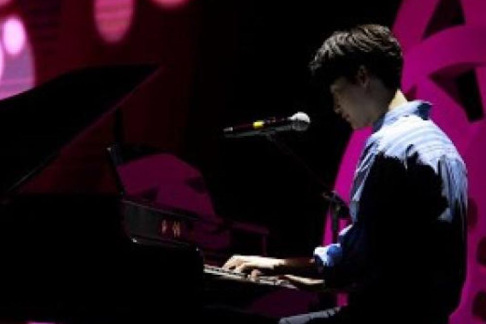

Website ini memuat materi tentang seni musik, meliputi pembahasan mengenai jenis-jenis musik, gaya bernyanyi lagu populer, serta latihan bernyanyi lagu populer dengan penerapan gaya yang tepat. Informasi ini diharapkan dapat memberikan pemahaman lebih mendalam tentang peran musik dalam kehidupan dan kebudayaan.

Materi
Definisi Musik Populer
Pemahaman Musik Populer.
Jenis - Jenis Musik Populer
Terdapat 4 jenis musik Populer.
Gaya Bernyanyi Lagu Populer
Pada jenis musik populer terdapat gaya yang tepat untuk bernyanyi lagu populer.
Latihan Bernyanyi Lagu Populer dengan Gaya yang Tepat
Metode latihan menyanyi lagu populer dengan gaya yang sesuai.
Definisi Musik Populer
Musik populer adalah musik yang ada dan tak terelakkan dalam aktivitas keseharian kita (Storey, 2007). Musik ini dapat ditemukan di mall, rumah sakit, apotek, atau hadir melalui siaran radio, televisi, tayangan YouTube, dan platform lainnya. Musik populer mencakup berbagai macam genre, seperti pop, rock, jazz, dan dangdut, yang terus berkembang mengikuti tren dan selera masyarakat. Selain berfungsi sebagai hiburan, musik populer juga menjadi media ekspresi, identitas, dan komunikasi budaya. Lagu-lagu populer biasanya memiliki irama yang menarik dan lirik yang mudah diingat, membuatnya cepat diterima oleh berbagai kalangan. Tak hanya itu, musik populer sering digunakan dalam iklan, film, dan kampanye sosial untuk menyampaikan pesan tertentu secara efektif. Kehadirannya juga berperan penting dalam industri musik global, menghasilkan fenomena artis dan grup musik yang dikenal di seluruh dunia serta menciptakan komunitas penggemar yang aktif.
Jenis-Jenis Musik Populer
Musik populer memiliki banyak jenis atau sering dikenal dengan genre, diantaranya adalah sebagai berikut :
Pop
Jenis lagu pop merupakan jenis lagu yang memiliki banyak pendengar. Jenis lagu ini sangat mudah diterima oleh masyarakat luas pada umumnya. Lagu-lagu pop yang berkembang saat ini bersifat komersial dan berkeinginan untuk memiliki daya tarik massa. Lagu pop di Indonesia banyak disajikan oleh penyanyi solo, grup band dan girl band atau boy band. Musik pop memiliki kemampuan untuk melakukan penyesuaian terhadap perubahan. Ragam musik pop berkembang seperti gaya musik Michael Jackson yang awalnya disebut sebagai disco, kemudian berubah menjadi rhythm and blues (Vincent, 2020). Di Indonesia kita juga dapat membedakan perubahan-perubahan itu misalnya musik pop yang dibawakan oleh Agnes Monica memiliki perbedaan karakter dengan musik pop yang dibawakan oleh Bunga Citra Lestari. Musik pop juga melakukan adaptasi dengan musik dari ragam budaya sehingga muncul salah satunya adalah K-Pop (Korean pop music). Di Indonesia juga muncul musik pop bernuansa daerah seperti pop Minang, pop Sunda, pop Jawa, pop Batak, dan lain-lain.
Jazz
Jazz merupakan musik kaum urban Amerika yang awalnya berkembang di New Orleans, awal abad 20. Dua tradisi musik rakyat Amerika keturunan Afrika (Afro American) yakni ragtime dan blues amat mempengaruhi karakteristik musik jazz. Yang mudah ditangkap ketika mendengarkan lagu jazz ini adalah vokal yang sering menirukan suara instrumen, suara penyanyinya biasanya mempunyai karakter vokal yang berat, harmonisasinya terdengar rumit, dan sering terjadi modulasi atau perubahan tangga nada dalam sebuah lagu dan ritme serta melodinya memiliki banyak variasi.
Rock
Musik rock adalah jenis musik populer yang berkembang tahun 1950an di Amerika sebagai perkembangan dari musik blues yakni musik rakyat orang Amerika keturunan Afrika yang berkulit hitam (black American), dan musik country yang berasal dari musik rakyat kaum putih di Amerika. Jenis lagu rock ini identik dengan suara yang kencang dengan permainan efek gitar yang menggelegar, bass drum yang dimainkan dengan tempo yang cepat dan kelompok pendengarnya yang ekspresif. Sebagai musik protes karakter musik rock antara lain volume suaranya keras, dan terdapat manipulasi suara gitar elektrik untuk menghasilkan karakter melengking, dan wilayah nada yang luas. Musik ini biasanya menampilkan dua suara gitar elektrik sebagai melodi dan pengiring, synthesizer, bas elektrik dan drum.
Pada akhir tahun 60-an dan awal 70-an, rock berkembang menjadi berbagai subgenre seperti soft rock, glam rock, heavy metal, hard rock, progressive rock, punk rock, dan lain-lain. (Kammien, 2017); (Hoffer, 1981).
Dangdut
Dangdut merupakan salah satu jenis musik populer yang berasal dari Indonesia. Cikal bakal dangdut adalah musik Melayu yang telah berkembang sejak tahun 1940an. Dangdut merupakan musik yang diwarnai oleh unsur-unsur musik Melayu, India, dan Arab; serta mulai berkembang sejak tahun 1970an. Lagu dangdut yang biasanya diiringi kendang dan seruling terdengar mengalun dan mengajak orang yang mendengarnya ikut bergoyang.
Gaya Bernyanyi Lagu Populer
Gaya bernyanyi musik populer pada dasarnya tidak terlalu banyak aturannya, hanya sebatas pada penguasaan teknik vokal dan pembiasaan mengikuti irama lagunya.
Seseorang yang jarang mendengarkan lagu dangdut, tentu akan kesulitan untuk menyanyikan lagu dangdut dengan cengkok yang baik. Tapi, bagi seseorang yang sejak kecil terbiasa mendengarkan irama dan lagu dangdut, biasanya lebih mudah mengikuti cengkok dengan baik.
Lagu jazz yang akan mudah diikuti apabila telinga penyanyinya terbiasa mendengarkan irama dan harmoni lagu-lagu jazz.
Untuk jenis lagu rock sang penyanyi haruslah powerfull dan ekspresif karena kebanyakan lagu rock memiliki irama musik yang bersemangat.
Lagu pop biasanya dinyanyikan dengan lebih santai dan tidak menonjol, penyanyi pop pun biasanya tampil dengan gaya yang disesuaikan dengan tema lagu dan tidak berlebihan.
Bernyanyi lagu jenis apa pun haruslah menampilkan mimik muka dan ekspresi yang sesuai dan mewakili makna lirik lagu yang dibawakan.
Latihan Gaya Bernyanyi Lagu Populer dengan Gaya yang Tepat
Sebelum memulai latihan menyanyikan lagu dengan gaya yang tepat, marilah kita latihan pemanasan vokal terlebih dahulu:
Berdiri dengan rileks, kedua kaki dibuka selebar bahu kemudian berat badan bertumpu seimbang di kedua kaki kita.
Lakukan pelemasan badan sebisanya, sampai badan terasa lebih rileks lagi.
Ambil napas dari hidung kemudian tahan selama 5 detik lalu keluarkan napas dengan suara seperti desi ular 'shss... lakukan berulang selama 3 kali putaran.
Lanjutkan dengan vokalisi atau pemanasan vokal.
Barulah mulai untuk membedah lagu yang telah dipilih.
Tentang
Nama saya Amaris Wursita, seorang pelajar dan penggemar musik. Sejak kecil, saya selalu tertarik dengan berbagai genre musik dan bagaimana musik dapat mempengaruhi emosi serta budaya kita. Melalui website ini, saya ingin berbagi pengetahuan tentang jenis-jenis musik populer yang ada di dunia dan memberikan wawasan mengenai artis dan lagu-lagu yang telah meninggalkan jejak dalam sejarah musik.
Website ini didedikasikan untuk menjelajahi dunia musik populer. Di sini, kamu akan menemukan berbagai informasi tentang genre musik yang paling banyak didengarkan, dari pop hingga rock, jazz, dan banyak lagi. Saya berharap website ini dapat menjadi sumber inspirasi dan pengetahuan bagi siapa saja yang ingin memahami lebih dalam tentang musik dan dampaknya terhadap kehidupan sehari-hari.
Kontak
Untuk informasi lebih lanjut, Jangan ragu untuk menghubungi saya melalui Direct Message di: